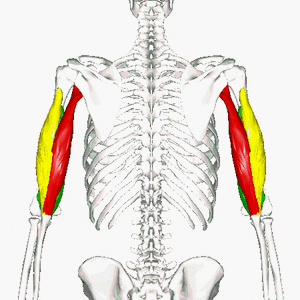

Targeted Fitness
Push Day
Everyones favorite day, Chest Day!
Chest
Description: The Pectoralis Major (chest) muscle is a large muscle that covers most of the upper chest. Its main functionality is moving the arm across the body.
Muscle parts: The Chest has three muscle heads, these include the: Clavicular head (Upper); Sternal head (Middle); Abdominal head (Lower).
Source: innerbody.com
Workouts By Level
| Level |
Exercise |
Benefits |
Video |
| Beginner Workouts |
Bench Press |
Everyone's favorite! Strengthens chest, shoulders, and triceps |
|
| Intermediate Workouts |
Standing Cable Fly |
Great chest isolation with reduced joint strain and constaint tension on the muscle. Modifications to the angle of this exercise will hit different parts of the chest! |
|
| Advanced Workouts |
Smith Machine Incline Press |
Hits the upper chest primarily, in addition to the rest of the chest, triceps, and shoulders. This exercise is also safer and reduced shoulder join pain. |
|
Triceps
Description: The triceps brachii (triceps), is a large muscle on the back part of the upper arm. When viewed from the back it has a tendency to appear like a horseshoe. The main function of the triceps is the extension of the arm through the elbow joint.
Muscle parts: The triceps has three muscle heads, these include the: Medial head (Green); Lateral head (Yellow); Long head (Red).

Source: Physiopedia
Workouts By Level
| Level |
Exercise |
Benefits |
Video |
| Beginner Workouts |
Rope Tricep Extensions |
Easy, effective, and hits the Medial and Lateral heads |
|
| Intermediate Workouts |
Overhead Tricep Extension |
Strengthens the Long head primarily, but also hits the Medial and Lateral head. Additionally, it helps strengthen shoulder stability. |
|
| Advanced Workouts |
Weighted Dips |
Strengthens the Long head primarily, but also hits the Medial and Lateral head. Additionally, it helps develop the lower chest. |
|
Shoulders
Description: The deltoid (shoulder) muscle is a large triangular shaped muscle that gives the shoulder a rounded look. The shoulder is very complex and has many functions, however, it acts mainly as an abductor of the shoulder (raising the arm out to the side).
Muscle parts: The Shoulder has three muscle, these include the: Fornt/Anterior Delt (Green); Side/Lateral Delt (Yellow); Rear/Posterior Delt (Red).
Source: Physiopedia
Workouts By Level
| Level |
Exercise |
Benefits |
Video |
| Beginner Workouts |
Seated Dumbbell Press |
Targets the Front and Side delts primarily, safe movement, easy, and very popular |
|
| Intermediate Workouts |
Dumbbell Lateral Raise |
Great for pure isolation of the deloid muscle, modifications of the raise angle can target different heads more effectively. |
|
| Advanced Workouts |
Barbell Overhead Press |
An upperbody compound movement which hits the shoudlers primarily, this exercise also builds core strength and stability within the deltiod muscles. |
|